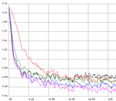

COMPARING OPTIMIZATION METHODS

Click for interactive demo
- What is the input and output of the network?
- Draw the architecture
- What happens as you play with it?
- What’s the difference between the three graphs? (May require Googling some terms)
- Which optimization method appears to be “best”? “Worst”?
- Can you adjust the hyperparameters, and/or the network architecture (number of layers, neurons in each layer, etc.), in such a way that the relative performance of the methods changes noticeably?